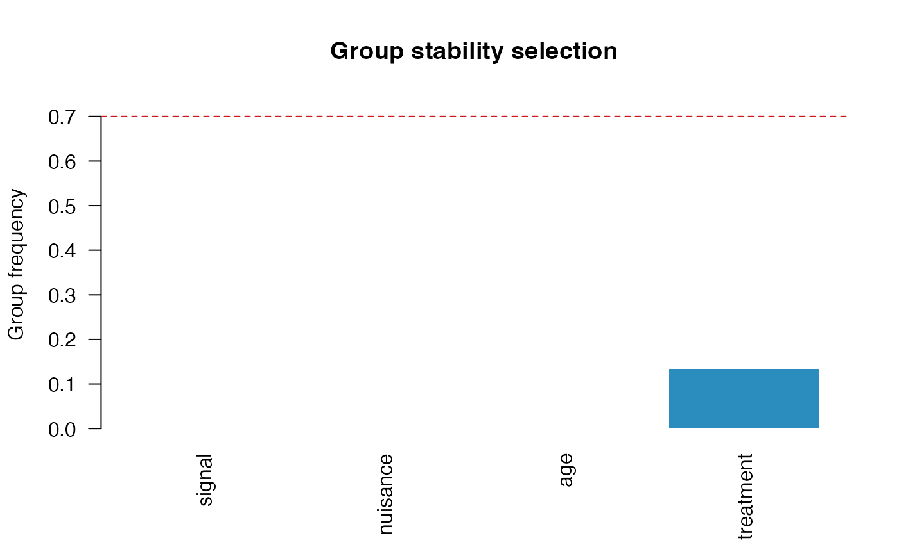
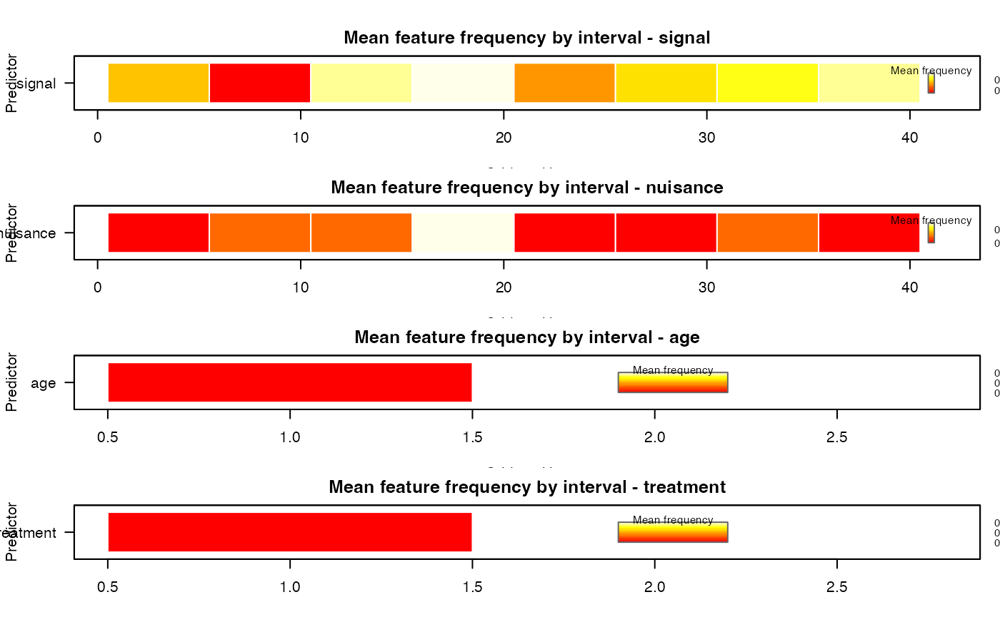

Discretized Curves and Grouped Stability Selection
Source:vignettes/discretized-curves.Rmd
discretized-curves.RmdSelectBoost.FDA can now go from raw discretized curves
to stability summaries without any manual matrix construction. The
design object stores the fitted preprocessing, the flattened matrix used
by the selector, and the reversible map back to the original curve
domain.
Build a functional design
library(SelectBoost.FDA)
data("spectra_example", package = "SelectBoost.FDA")
signal <- fda_grid(
spectra_example$predictors$signal,
argvals = spectra_example$grid,
name = "signal",
unit = "nm"
)
nuisance <- fda_grid(
spectra_example$predictors$nuisance,
argvals = spectra_example$grid,
name = "nuisance",
unit = "nm"
)
design <- fda_design(
response = spectra_example$response,
predictors = list(signal = signal, nuisance = nuisance),
scalar_covariates = spectra_example$scalar_covariates,
scalar_transform = fda_standardize(),
family = "gaussian"
)
design
#> FDA design
#> observations: 80
#> features: 82
#> functional predictors: 2
#> scalar covariates: 2
#> family: gaussian
#> response available: TRUE
summary(design)
#> FDA design summary
#> observations: 80
#> features: 82
#> family: gaussian
#> response available: TRUE
#> functional predictors: 2
#> scalar covariates: 2
#> predictor representation n_features
#> nuisance grid 40
#> signal grid 40
#> age scalar 1
#> treatment scalar 1
head(selection_map(design))
#> feature predictor block position argval representation
#> signal.1 signal_1 signal signal 1 1100 grid
#> signal.2 signal_2 signal signal 2 1135.89743589744 grid
#> signal.3 signal_3 signal signal 3 1171.79487179487 grid
#> signal.4 signal_4 signal signal 4 1207.69230769231 grid
#> signal.5 signal_5 signal signal 5 1243.58974358974 grid
#> signal.6 signal_6 signal signal 6 1279.48717948718 grid
#> basis_type transform source_predictor source_representation
#> signal.1 <NA> identity signal grid
#> signal.2 <NA> identity signal grid
#> signal.3 <NA> identity signal grid
#> signal.4 <NA> identity signal grid
#> signal.5 <NA> identity signal grid
#> signal.6 <NA> identity signal grid
#> source_position_start source_position_end source_argval_start
#> signal.1 1 1 1100
#> signal.2 2 2 1135.89743589744
#> signal.3 3 3 1171.79487179487
#> signal.4 4 4 1207.69230769231
#> signal.5 5 5 1243.58974358974
#> signal.6 6 6 1279.48717948718
#> source_argval_end domain_start domain_end component unit
#> signal.1 1100 1100 1100 <NA> nm
#> signal.2 1135.89743589744 1135.89743589744 1135.89743589744 <NA> nm
#> signal.3 1171.79487179487 1171.79487179487 1171.79487179487 <NA> nm
#> signal.4 1207.69230769231 1207.69230769231 1207.69230769231 <NA> nm
#> signal.5 1243.58974358974 1243.58974358974 1243.58974358974 <NA> nm
#> signal.6 1279.48717948718 1279.48717948718 1279.48717948718 <NA> nm
#> feature_index basis_component domain_label
#> signal.1 1 <NA> 1100 nm
#> signal.2 2 <NA> 1135.89743589744 nm
#> signal.3 3 <NA> 1171.79487179487 nm
#> signal.4 4 <NA> 1207.69230769231 nm
#> signal.5 5 <NA> 1243.58974358974 nm
#> signal.6 6 <NA> 1279.48717948718 nmThe design stores the fitted preprocessing object as well. In this first workflow the functional predictors stay on their original grid, while the scalar covariates are standardized.
design$preprocessor
#> FDA preprocessor
#> functional predictors: 2
#> scalar covariates: 2
#> total blocks: 4
summary(design$preprocessor)
#> FDA preprocessor summary
#> predictors: 4
#> predictor representation transform n_features
#> signal grid identity 40
#> nuisance grid identity 40
#> age scalar standardize 1
#> treatment scalar standardize 1Fit grouped stability selection
The following chunk is evaluated only when grpreg is
installed.
fit <- fit_stability(
design,
selector = "grpreg",
B = 30,
sample_fraction = 0.5,
cutoff = 0.7,
seed = 1
)
fit
#> FDA stability selection
#> family: gaussian
#> features: 82
#> groups: 4
#> replicates: 30
#> cutoff: 0.7
summary(fit)
#> FDA stability selection summary
#> family: gaussian
#> predictors: 4
#> features: 82
#> groups: 4
#> replicates: 30
#> sample fraction: 0.5
#> cutoff: 0.7
#> selected features: 0
#> selected groups: 0
head(selection_map(fit))
#> feature predictor block position argval representation
#> signal.1 signal_1 signal signal 1 1100 grid
#> signal.2 signal_2 signal signal 2 1135.89743589744 grid
#> signal.3 signal_3 signal signal 3 1171.79487179487 grid
#> signal.4 signal_4 signal signal 4 1207.69230769231 grid
#> signal.5 signal_5 signal signal 5 1243.58974358974 grid
#> signal.6 signal_6 signal signal 6 1279.48717948718 grid
#> basis_type transform source_predictor source_representation
#> signal.1 <NA> identity signal grid
#> signal.2 <NA> identity signal grid
#> signal.3 <NA> identity signal grid
#> signal.4 <NA> identity signal grid
#> signal.5 <NA> identity signal grid
#> signal.6 <NA> identity signal grid
#> source_position_start source_position_end source_argval_start
#> signal.1 1 1 1100
#> signal.2 2 2 1135.89743589744
#> signal.3 3 3 1171.79487179487
#> signal.4 4 4 1207.69230769231
#> signal.5 5 5 1243.58974358974
#> signal.6 6 6 1279.48717948718
#> source_argval_end domain_start domain_end component unit
#> signal.1 1100 1100 1100 <NA> nm
#> signal.2 1135.89743589744 1135.89743589744 1135.89743589744 <NA> nm
#> signal.3 1171.79487179487 1171.79487179487 1171.79487179487 <NA> nm
#> signal.4 1207.69230769231 1207.69230769231 1207.69230769231 <NA> nm
#> signal.5 1243.58974358974 1243.58974358974 1243.58974358974 <NA> nm
#> signal.6 1279.48717948718 1279.48717948718 1279.48717948718 <NA> nm
#> feature_index basis_component domain_label feature_frequency
#> signal.1 1 <NA> 1100 nm 0
#> signal.2 2 <NA> 1135.89743589744 nm 0
#> signal.3 3 <NA> 1171.79487179487 nm 0
#> signal.4 4 <NA> 1207.69230769231 nm 0
#> signal.5 5 <NA> 1243.58974358974 nm 0
#> signal.6 6 <NA> 1279.48717948718 nm 0
#> selected group_id group group_frequency group_selected
#> signal.1 FALSE 1 signal 0 FALSE
#> signal.2 FALSE 1 signal 0 FALSE
#> signal.3 FALSE 1 signal 0 FALSE
#> signal.4 FALSE 1 signal 0 FALSE
#> signal.5 FALSE 1 signal 0 FALSE
#> signal.6 FALSE 1 signal 0 FALSE
plot(fit, type = "group")
selected(fit, level = "group")
#> [1] predictor group_id group
#> [4] representation basis_type source_representation
#> [7] n_features start_position end_position
#> [10] start_argval end_argval domain_start
#> [13] domain_end mean_feature_frequency max_feature_frequency
#> [16] selected_features group_frequency group_selected
#> <0 rows> (or 0-length row.names)Interval-level summaries
You can also move from predictor-level groups to non-overlapping intervals.
interval_fit <- interval_stability_selection(
design,
width = 5,
selector = "grpreg",
B = 20,
cutoff = 0.6,
seed = 2
)
head(interval_fit$interval_table)
#> group block start end label
#> 1 1 signal 1 5 signal[1:5]
#> 2 2 signal 6 10 signal[6:10]
#> 3 3 signal 11 15 signal[11:15]
#> 4 4 signal 16 20 signal[16:20]
#> 5 5 signal 21 25 signal[21:25]
#> 6 6 signal 26 30 signal[26:30]
plot(
interval_fit,
type = "interval",
value = "mean",
facet = "predictor",
legend_title = "Mean frequency",
palette = grDevices::heat.colors(24)
)
selected(interval_fit, level = "group")
#> predictor group_id group representation basis_type
#> 3 signal 3 signal[11:15] grid
#> 4 signal 4 signal[16:20] grid
#> 6 signal 6 signal[26:30] grid
#> 7 signal 7 signal[31:35] grid
#> 8 signal 8 signal[36:40] grid
#> 17 age 17 age[1:1] scalar
#> 18 treatment 18 treatment[1:1] scalar
#> source_representation n_features start_position end_position
#> 3 grid 5 11 15
#> 4 grid 5 16 20
#> 6 grid 5 26 30
#> 7 grid 5 31 35
#> 8 grid 5 36 40
#> 17 scalar 1 1 1
#> 18 scalar 1 1 1
#> start_argval end_argval domain_start domain_end
#> 3 1458.97435897436 1602.5641025641 1458.97435897436 1602.5641025641
#> 4 1638.46153846154 1782.05128205128 1638.46153846154 1782.05128205128
#> 6 1997.4358974359 2141.02564102564 1997.4358974359 2141.02564102564
#> 7 2176.92307692308 2320.51282051282 2176.92307692308 2320.51282051282
#> 8 2356.41025641026 2500 2356.41025641026 2500
#> 17 age age age age
#> 18 treatment treatment treatment treatment
#> mean_feature_frequency max_feature_frequency selected_features
#> 3 0.80 0.80 5
#> 4 0.85 0.85 5
#> 6 0.60 0.60 5
#> 7 0.70 0.70 5
#> 8 0.80 0.80 5
#> 17 0.75 0.75 1
#> 18 0.95 0.95 1
#> group_frequency group_selected interval_start interval_end interval_label
#> 3 0.80 TRUE 11 15 signal[11:15]
#> 4 0.85 TRUE 16 20 signal[16:20]
#> 6 0.60 TRUE 26 30 signal[26:30]
#> 7 0.70 TRUE 31 35 signal[31:35]
#> 8 0.80 TRUE 36 40 signal[36:40]
#> 17 0.75 TRUE 1 1 age[1:1]
#> 18 0.95 TRUE 1 1 treatment[1:1]